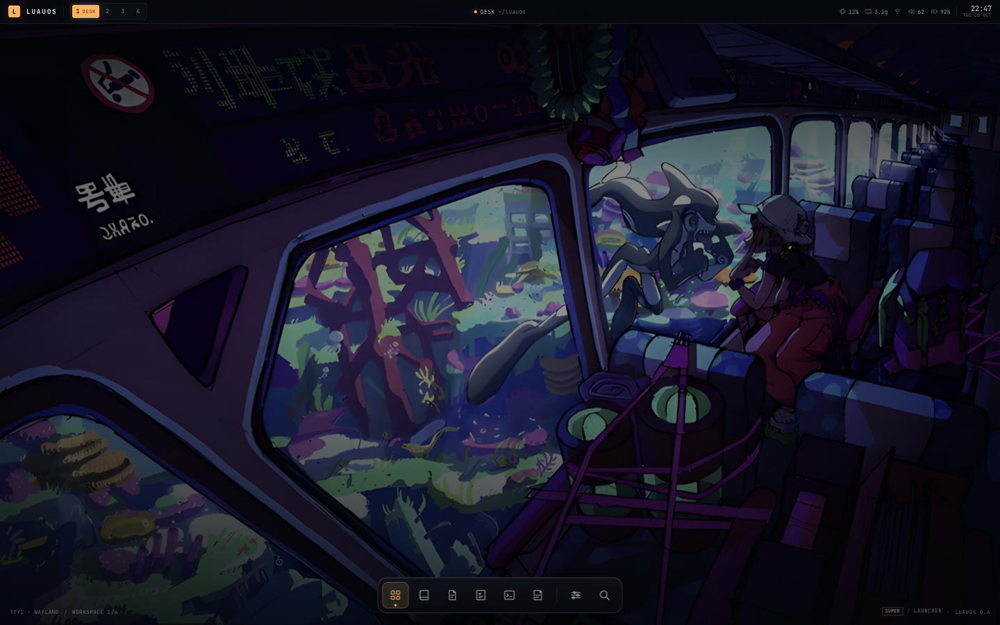
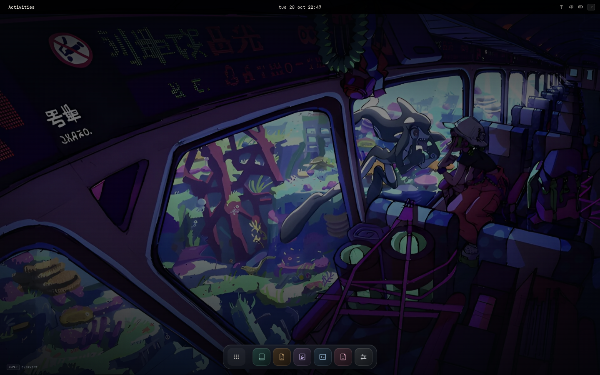
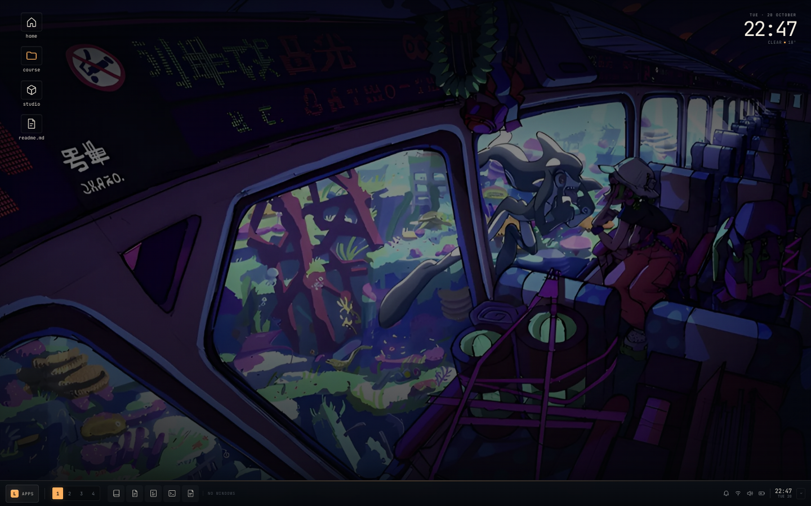
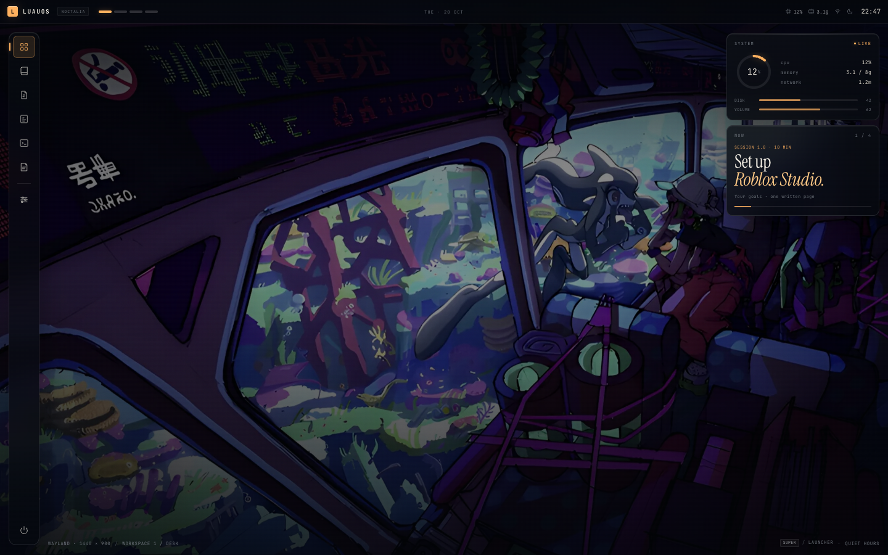

01hyprcustom tiling · slim bar · centered dockopen study →
02gnomeadwaita · activities · floating dashopen study →
03plasmadesktop icons · clock · full taskbaropen study →
04noctaliaside dock · system HUD · telemetryopen study →